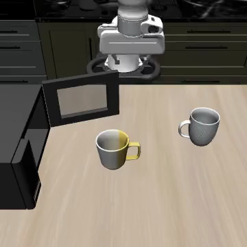
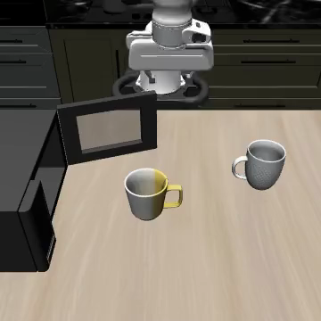
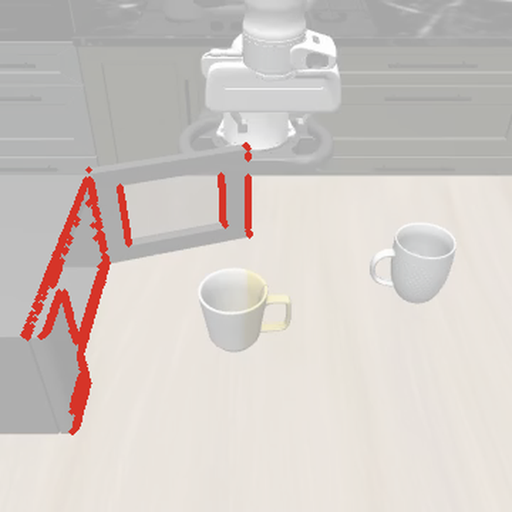
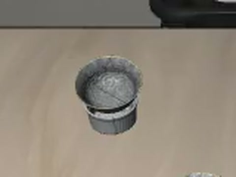
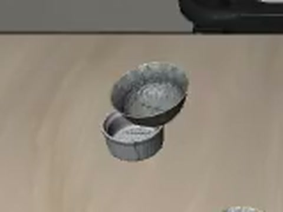
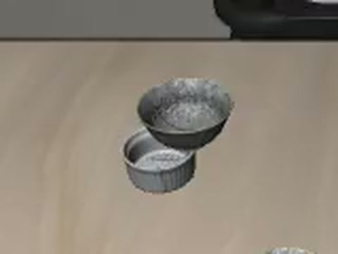

the seed moved the microwave
what 521 evaluations of robot policies in simulation taught me about where a success rate comes from.
this started with a boring check. i had π0.5 running on LIBERO through LeRobot, and before comparing it with anything else i ran the exact same command five times, just to see how much the number moves on its own. it came back 87, 90, 87, 87 and 90 percent.
same checkpoint, same seed, same GPU, same command. three points is about the size of the gaps people use to rank policies on this benchmark, so i kept pulling on the thread. it took 521 full evaluations (about 53,600 episodes), seven policies, two simulators and two machines before i felt i understood where these numbers come from.
this post walks through what i found, with the actual rollout videos. none of it needs a robot, just a GPU and a lot of patience.
same command, different answer
the first suspect was the GPU. by default LeRobot lets cuDNN time a few kernels when it starts and keep whichever is fastest, and some GPU kernels add numbers up in whatever order their threads happen to finish. neither matters much in training. in a closed loop it does: the last digit of an action changes, the arm ends up a hair somewhere else, the next camera frame is a hair different, and a few hundred steps later the gripper closes a few millimetres to the left.
between any two of my five runs, 7 to 15 of the 100 episodes changed outcome. switching on deterministic kernels removed that completely. π0.5 scored 91% in all five runs, with not one episode different between any pair, and π0 behaved the same way. SmolVLA happened to repeat exactly even without the switch, and π0-FAST kept one scene that flips no matter what.
notice that 91 isn't a better score. without the switch π0.5 averaged 88.2%. determinism freezes one particular draw of the noise, so the number becomes repeatable, but it's still one sample.
the seed moved the microwave
re-runs were the easy part. the stranger thing showed up when i changed the seed.
π0-FAST is a handy policy for this because it decodes greedily. given the same images it produces the same actions, with no sampling anywhere. i took one stored scene from LIBERO-Long, “put the yellow and white mug in the microwave and close it”, and ran it under seven evaluation seeds. nothing else changed.
if the policy has no randomness and the scene comes from a file, what is the seed changing?
it took me a while to see it. drag the divider across the microwave in the two first frames: it isn't in the same place.
LIBERO's initial-state files store the position and velocity of every joint in the scene: the robot, the mug, the hinges of doors and drawers. the furniture itself (cabinets, stoves, the microwave, the wine rack) is fixed to the table and has no joint. on every hard reset LIBERO places it again with the seeded random generator, and the stored state has no slot to put it back.
so the seed moves the furniture, by up to 2.5 cm and typically 1.3 to 1.6 cm. that sounds small, but it's a lot when the task is to catch the edge of a microwave door.



once you know what to look for, it's everywhere. here is every scene π0-FAST sees on LIBERO-Long, under all seven seeds.
checking that it really is the furniture
one policy lining up with one explanation isn't proof, so i tried to break the explanation three ways.
- no policy at all. i replayed fixed action sequences from one stored state under two seeds. five of six diverged, each one at the moment the arm touched a displaced fixture.
- swap the furniture. copying one seed's fixture poses into the other seed's model made five of five runs bit-identical again.
- human demonstrations. replayed under 20 seeds, 26 of LIBERO's 50 recorded demos changed outcome in a task with a moving cabinet. in a task where the seed moves nothing, none did.
i wasn't the first to bump into this. a version of it was reported on the OpenVLA repo (issue #342), where the fixtures weren't restored when one environment was reused across episodes. what i added is tracing it all the way down to the physics and measuring what it does to scores.
one twist: LIBERO's own demonstrations were recorded with the furniture in slightly different places too, about as spread out as the seed makes it. so the evaluation scenes aren't out of distribution. the files that are supposed to fix a scene just don't fix all of it.
pinning the furniture
the fix is small. i added an opt-in switch that ties the furniture placement to the scene's index instead of the seed, so a stored scene really is one scene.
with it, π0.5 scored 90.0% under six different seeds, and no episode changed between any two runs. without it, the same six seeds scored 83 to 87% and about 12 episodes flipped per pair. for π0 and π0-FAST the switch removed the seed's effect completely, and for SmolVLA 96% of it, on a second machine as well.
then i tried the obvious follow-up and pinned six other layouts. π0.5 scored anywhere from 85 to 90% depending on which one i picked, and the layouts disagreed on about 11.5 episodes per pair, as many as a fresh seed.
so pinning makes a number reproducible. it doesn't make it the right number, because there is no right layout to pin: LIBERO recorded its 50 demonstrations per task under 50 different layouts.
that's the line i kept coming back to. reproducible is not comparable. a pinned score repeats to the decimal, and it still carries an offset nobody knows the sign of.
everything else between the weights and the number
once you start looking, every layer between the checkpoint and the success rate has a setting like this. i changed them one at a time.
settling steps and the MuJoCo version
after every reset LeRobot steps the simulator ten times with a zero action, so objects can settle before the policy looks. in LIBERO-Spatial task 5 the bowl is stored hovering just above a ramekin and is meant to drop onto it. on MuJoCo 3.3.7 it does. on 3.8.1 it ends up leaning off the rim.
with 40 settling steps instead of 10, task 5 falls from 92.9% to 62.9% on MuJoCo 3.8.1, and barely moves on 3.3.7 (100% to 98.6%). either change on its own looks harmless; together they cost the task thirty points. there's an open LeRobot issue about the bowl (#4390).

3.3.7 · 40 steps
3.8.1 · 10 steps
3.8.1 · 40 stepschunk length
π0.5 predicts 50 actions at a time, and the evaluator decides how many of them to execute before asking again. LeRobot's LIBERO docs use 10, while the config that ships with the checkpoint says 50. that one number moves π0.5 by 3 to 12 points per suite.
how the harness seeds things
openpi and LeRobot seed the same LIBERO simulator in different ways. running π0.5 both ways with everything else equal changed 12 to 13 of 100 outcomes, close to what a new seed changes (14 to 17).
the renderer
on SimplerEnv's WidowX tasks, rendering on the CPU instead of the GPU dropped Qwen3-VL-GR00T from 60.1% to 46.6% over seven repeats each. X-VLA didn't move. same tasks, same weights; one policy is just more sensitive to small rendering differences than the other.
the GPU itself
last, the machine. i ran SmolVLA on an RTX 4090 and an RTX 3060 with identical software. the averages agree (−0.4 points). but even with CPU rendering, where both machines produce pixel-identical frames, 22 to 32 episodes per seed came out differently. the policy's arithmetic isn't exactly the same on two GPUs, so the rollouts aren't either.
how small a gap can you trust?
even with everything above held fixed, a lot of plain chance is left. fix the task and the stored scene and simply run it again, and about 82% of the variance in whether an episode succeeds is still there.
that puts a floor under rankings. with LeRobot's protocol (100 episodes × 3 seeds), two strong policies need to be roughly 2.7 to 6.8 points apart before one evaluation can tell them apart reliably (80% power, 5% false alarms). many of the gaps between top LIBERO results are smaller than that.
what i'd tell anyone running sim evals
- report the boring settings with every number: harness and version, seeds, chunk length, settling steps, simulator version, renderer and GPU.
- compare methods under identical settings, or average over several. a pinned seed, layout or machine gives a repeatable number with an unknown offset.
- don't rank policies that are within a few points of each other on one binary-success evaluation, and share per-scene outcomes so others can compare paired.
- when a number looks off, repeat a fixed-seed run, seed the simulator and the policy separately, replay actions with no policy, and change one thing at a time. those four checks found everything in this post.
none of this is a bug in the usual sense. every choice above is reasonable on its own. a simulated success rate just measures the policy together with everything that ran it, and most of that never makes it into a paper. i'm turning my switches into small pull requests for LeRobot, so that at least these settings are easy to set and easy to record.
how i ran everything
- policies
- π0, π0.5, π0-FAST, SmolVLA and MolmoAct2 on LIBERO, using LeRobot's checkpoints. X-VLA and Qwen3-VL-GR00T on SimplerEnv's WidowX tasks through vla-eval. π0-FAST decodes greedily; the others sample noise at every call.
- protocol
- lerobot-eval with stored initial states and hard resets; 10 tasks × the first 10 of LIBERO's 50 stored scenes per suite. runs differ only in the setting under test.
- stack
- MuJoCo 3.8.1 (and 3.3.7 for the version test), robosuite 1.4.0; GPU (EGL) and CPU (OSMesa) rendering; an RTX 4090 workstation, plus an RTX 3060 one for the second-machine runs.
- numbers
- 521 evaluations, about 53,600 episodes. every number and chart here is regenerated by script from the per-episode outcome files.